别等身体亮红灯！百年春自体干细胞，为您定制细胞级抗衰防线
2026-03-04

About Us
关于百年春
随着生命科学研究不断发展，人类对干细胞的了解逐渐深入，干细胞相关科研成果在疾病治疗、再生医学等方面发挥越来越重要的作用。
生命由细胞组成，在各式各样的细胞中，有一类细胞非常特别，它可以继续不断地繁衍、自我复制、自我更新，具有向成体身上各种组织器官发育的潜能，为机体健康提供了非常多的可能性。
这类细胞我们称之为——干细胞。
干细胞为人类许多医学难题提供了新的研究方向，随着干细胞临床研究案例的频繁报道，医学界对干细胞寄予厚望。本篇文章汇总了近6年来，来自中国科学院、中国工程院的43名院士在公开场合对干细胞的高度评价。
院士名单（按发言时间排序）：陈义汉、张柏礼、李劲松、詹启敏、陈晔光、郑树森、张志愿、鞠躬、赵铱民、李校堃、苏国辉、王广基、魏于全、周宏灏、石学敏、陈凯先、廖万清、王福生、陈子江、于金明、王松灵、徐涛、徐冠华、闻玉梅、施一公、陈润生、李兰娟、夏照帆、顾晓松、季维智、周琪、曹雪涛、陈香美、俞梦孙、乔杰、袁国勇、钟南山、白春礼、刘以训、戴尅戎、赵继宗、付小兵、裴钢。
陈义汉(中国科学院院士)
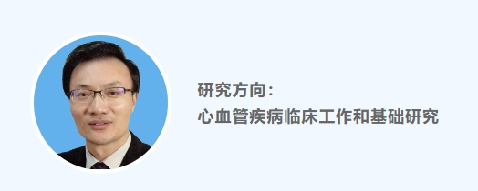
2022年11月15日，在2022博鳌干细胞峰会暨中国干细胞产业联盟成立大会上，陈义汉院士指出：“我认为干细胞治疗是一个朝阳产业、前景无限，许多重大的疾病有可能通过细胞治疗取得重大的突破，应把这一方向发扬光大，推进干细胞从研发走向临床实际应用，走向产业化。”
张伯礼(中国工程院院士)
2022年11月14日，中国工程院院士张伯礼在接受《科技日报》记者采访时指出：“在日常生活中，免疫力是保护身体非常重要的武器，只要免疫强大，就能进一步增强抵抗病毒的能力。一个强大的免疫系统，需要的是稳定的体内环境和源源不断的强大修复能力。这个提供源源不断的修复再生能力的'发动机’就是干细胞和免疫细胞。”
李劲松(中国科学院院士)
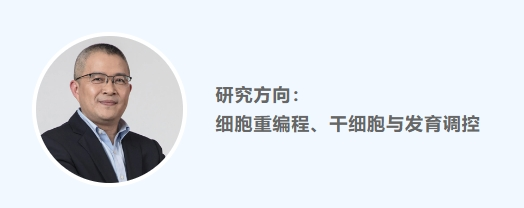
2022年8月17日，在第24届上海国际生物技术与医药研讨会上，李劲松院士表示：“类精子干细胞介导的遗传改造，将胚胎干细胞介导和生殖细胞介导的遗传改造优势进行了融合，能够高效、精准、低成本地制备转基因小鼠。”李劲松院士指出，首先是在基因层面，可以利用类精子干细胞对复杂疾病进行快速模拟。“无论是单基因突变疾病，还是双基因突变疾病，甚至是多基因突变疾病，都可以实施精准改造。”
詹启敏(中国工程院院士)
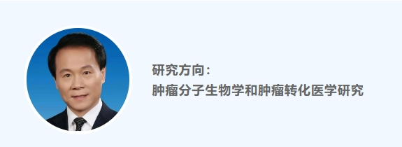
2022年8月7日，詹启敏院士在广西科协《科学名家谈》中表示：“干细胞的再生能力，对组织器官的修复替代，对器官的重建、制造有很大的帮助。我们做了很多的器官移植手术，器官移植手术的瓶颈是什么?缺少供体，干细胞和再生医学在这方面可以发挥很重要的作用。北京大学第三医院的专家，在为一位病人成功切除了15厘米长的脊柱之后，用3D打印的脊柱给病人作了很好的修复，这个病人目前正常地在生活，甚至还可以保持合适的运动。”
陈晔光(中国科学院院士)
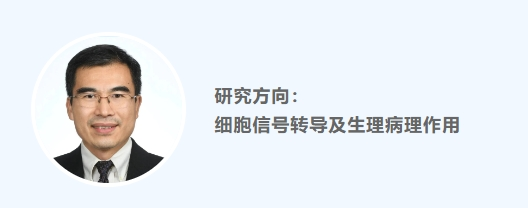
2022年5月8日，《人民日报》刊载中国科学院院士陈晔光署名文章《干细胞研究与应用——为人类生命健康提供保障》。他指出：“随着生命科学研究不断发展，人类对干细胞的了解逐渐深入，干细胞相关科研成果在疾病治疗、再生医学等方面发挥越来越重要的作用。
应用干细胞技术，不仅可以治疗白血病、免疫系统疾病等过去难以医治的疾病，还可以延展出类器官技术，以加速新药开发、助力精准医疗，甚至有望推动再生医学实现飞跃，如治疗阿尔茨海默病、修复衰老器官等。可以说，干细胞研究与应用持续为人民群众的生命健康提供保障。”
郑树森(中国工程院院士)
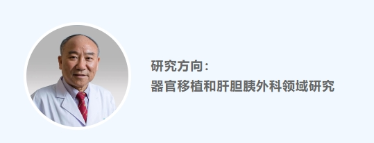
2022年4月29日，在浙江大学医学院附属杭州市第一人民医院“十四五”国家重点研发计划“干细胞研究与器官修复”重点专项项目启动会上，郑树森院士表示：“干细胞技术是前沿科技，在器官移植应用领域潜力巨大，靶向干预干细胞有望成为促进肝脏损伤修复与再生的有效手段。”
张志愿(中国工程院院士)
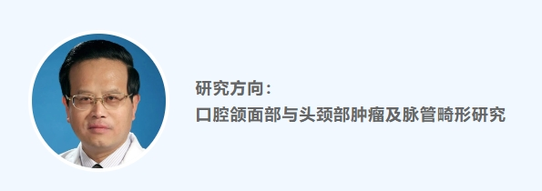
2022年1月21日，在晋中市第一人民医院干细胞治疗科学委员会成立大会上，张志愿院士表示：“干细胞治疗可应用于全身疾病，它的发展前景也是越来越好。并且牙源性干细胞有很多优垫，如分化增殖能力强，可朔性强，保存时间长、免疫原性低、来源丰富、取材便利。干细胞治疗科学委员会的成立是非常有必要的，也是非常及时的。”
鞠躬(中国科学院院士）
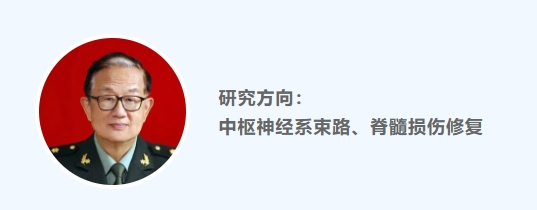
2021年12月30日，在2021辽宁第三届医学前沿与细胞治疗大会上，鞠躬院士表示：“新冠疫情的防控和治疗是社会关注的焦点，也是科研工作者和医务人员的战场，干细胞在危重症中的应用，科研团队给出了令人兴奋的数据，人类在征服疾病的创新方法，特别在细胞层面的技术创新，更令人期待。”
赵铱民(中国工程院院士)
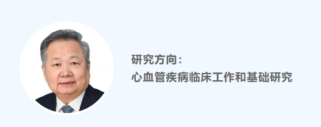
2021年12月20日，《陕西日报》刊载的《方寸之间 大医精诚——记中国工程院院士、空军军医大学口腔医院教授赵铱民》引用了赵铱民院士的话语：“最好的修复是人的本身，恢复人的自然形态和自然功能状态是我们的最终目标。三个'R’——替代(Replacement)、重建(Reconstruction)和再生(Regeneration)，分别代表了口腔医学的昨天、今天和明天。过去很漫长的一段时间内，我们都是在用人工材料替代缺失的牙齿和口腔组织。
今天，我们正按照原有的形态和功能去重建患者丧失的口腔组织。未来口腔医学要走到哪儿去?以组织工程和干细胞技术为代表的再生医学让我们看到了新的希望。”
李校堃(中国工程院院士)
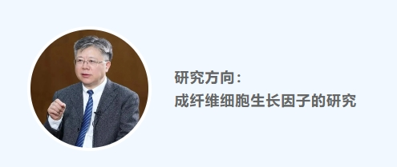
2021年11日14日，李校堃院士在温州市细胞研究中心揭牌仪式上大力支持温州开展干细胞研究，他在致辞中介绍：“干细胞是一类具有自我复制更新和多向分化潜能的原始细胞群，相关研究已成为全球热点。目前国内干细胞产业链上游发展较为成熟，但中游干细胞技术与药物研发、下游干细胞医疗应用市场等还多停留在临床试验或市场试验阶段，而温州在这一领域尚处空白。发展干细胞产业，温州有着很好的'土壤’，希望双方能够在研究成果转化、人才培养及细胞产品研发等诸多方面共同携手，大胆创新，开展持续、广泛、深入的合作，为温州再生医学大健康生态添砖加瓦。”
苏国辉(中国科学院院士)
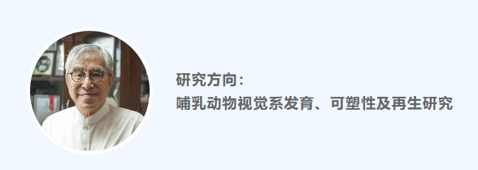
2021年11月19日在上海举行的“对话大脑”院士论坛上，苏国辉院士表示：“干细胞治疗作为再生医学领域中最先进的治疗方式，已在膝骨关节炎治疗中具有显著的治疗效果，它势必会推动医疗、预防医学等行业发生颠覆性的革命。随着干细胞产业政策不断的完善和落地，未来需要加快核心关键技术研发、推进科技与产业的深度融合、强化科技成果转化等。
王广基(中国工程院院士)
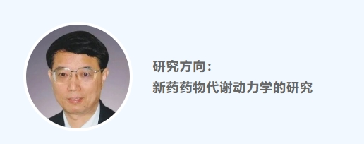
2021年10月20日，在2021中国生物技术创新大会(第三届)上，王广基院士表示：“近十年来，细胞药物正在引发医学革命。其中，异体间充质干细胞是细胞治疗中最且有发展前景、最有可能成为货架产品的一种治疗手段，将给诸多疑难杂症(如移植物抗宿主病、系统性红斑狼疮、克隆恩病、脊髓损伤、膝骨关节炎等)的治愈带来可能。”
魏于全(中国科学院院士)
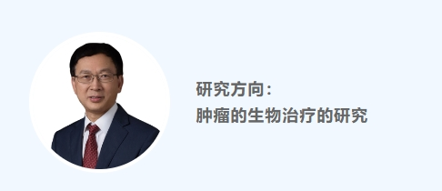
2021年9月25日，魏于全院士在2021第七届成都精准医学国际学术论坛上表示：“目前全球多个关于抗衰的生物技术项目，例如用于减缓衰老的异体间充质干细胞项目，已经进入临床试验;干细胞移植治疗糖尿病足;人类脐带血重塑老年老鼠海马功能，以探索治疗阿尔兹海默症等研究项目。”
周宏灏(中国工程院院士)
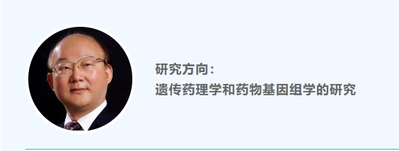
2021年9月2日，在湖南省干细胞与生物材料工程研究中心揭牌仪式上，周宏灏院士表示：“我们国家正处于重要的发展时期，复杂的国际形势，要求我们在各个行业，尤其是尖端的、高端的、关键性的、突破性的技术方面有所发展。干细胞和药学研究正是这样一个重要的领域。我们要感谢干细胞未来将在人类健康中发挥非常重大的作用。一些突出的慢性疾病、重大的恶性疾病、全新的疾病，一些健康方面的问题，都可能因为干细胞的研究转化而受益。”
石学敏(中国工程院院士)
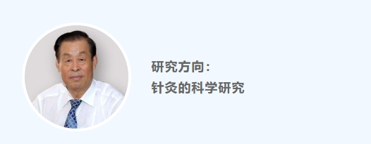
2021年3月1日，在国家中医针灸临床医学研究中心召开的“一四五”发展规划研讨会上，石学敏院士针对国家中心“十四五”阶段的发展进行了全面部署，他表示：“一是针刺手法量学是国家中心未来的主要研究方向，基于我们目前的临床优势，与国内高水平机构强强联合，多开展针灸量效关系的研究，争取产出更多高质量研究成果。二是干细胞研究是一个起步阶段，现在做的是针刺结合干细胞治疗脑缺血的临床前研究，今后还将开展认知障碍方向的临床前研究。三是要尊重人才，重视培养临床和基础研究人才，充分发挥各类人才的优势。”
陈凯先(中国科学院院士)
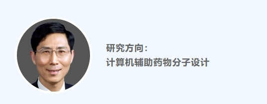
2020年12月12日，在第二届CSCO-再鼎临床肿瘤学新进展高峰论坛上，陈凯先院士表示：“要高度重视国际前沿发展方向，包括基因治疗、免疫治疗、干细胞治疗等创新疗法，以及指导个性化用药的诊断产品。”
廖万清(中国工程院院士)
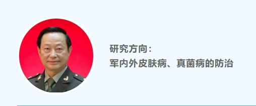
研究方向：
军内外皮肤病、真菌病的防治
2020年11月1日，在第一届AIE国际再生医学研讨会上，廖万清院士表示：“干细胞外泌体在皮肤临床的应用，将推动皮肤科外用制剂的新革命。现在打造高层次医学科研创新平台，相信将来会为病人提供更多、更好的解决方案。”
王福生(中国科学院院士)
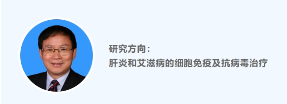
2020年10月25日，王福生院士在第15届国际基因组学大会上接受专访时表示：“干细胞治疗现在用的最多的还是有一种叫间充质干细胞治疗。间充质干细胞治疗，它主要也是发挥一个免疫调节作用，能够使疑难危症疾病条件下，体内异常的免疫应答或者异常的炎症反应造成组织器官的严重损伤。而且这种干细胞治疗能够使这种炎症反应降低，使这种组织修复，促进这种组织的愈合，还促进这种组织的再生，所以达到这么一个治疗效果。
”2021年11月，中国疾病细胞/生物治疗大会以线上会议的形式举办，王福生介绍了免疫细胞和干细胞在肝炎和新冠肺炎中的疗效。他指出，细胞作为一种药物是近十年的发展成果，这项新技术具有引领性、突破性、颠覆性，临床治疗更及时、更准确、更智能，使重大疾病的治疗有了更多、更好的选择。
陈子江(中国科学院院士)
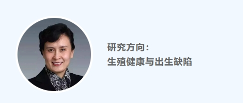
于金明(中国工程院院士)
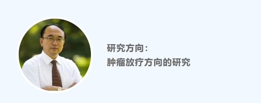
2020年9月12日，在2020年干细胞临床应用及再生医学研讨峰会上，于金明院士表示：“近年来生命科学已成为发展最为迅速、影响最为广泛的科学领域，以干细胞治疗技术应用的临床示范和产业基地建设为代表的重大科技专项的落地，持续为干细胞技术的发展注入新动能。同时，国家的政策引导及资金投入，保障了对干细胞技术研究的支持。干细胞研究和临床转化政策日益完善，将推动和促进中国干细胞治疗领域的健康快速发展。
目前，我国干细胞医疗行业已拥有成熟的产业链，从上游的干细胞存储、中游的药物研发到下游的临床治疗，都有相对完整的链条，其发展将为医疗领域提供革命性的技术手段。”
王松灵(中国科学院院士)
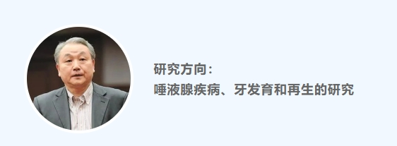
2020年8月22日，在2020中国财富论坛上，王松灵院士表示：“我们课题组经过十多年的努力，用干细胞来进行口腔疾病的治疗。干细胞来自于哪里?来自于年轻人的智齿拔出，到18岁的时候智齿拔出扔了，当垃圾了，但是我们知道里面有宝贝，有干细胞。还有乳牙，乳牙要掉的，里面也有干细胞。
干细胞新药这是一个全新的事情，我们花了近十年的时间做这个药，各方面的专利我们都有。通过我们的体系，让牙髓干细胞这个药经过了一个产业链，变成这个药以后，我们局部注射来治疗牙周炎，将来抗衰老、美容都可以用的一个新药出来了。”
徐涛(中国科学院院士)
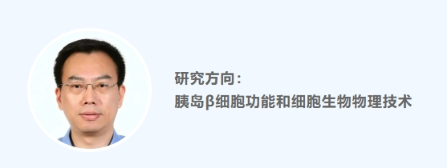
2020年8月8日，在2020国际(广州)干细胞与精准医疗产业化大会上，徐涛院士表示：“干细胞在新冠肺炎治疗上的效果还是不错的，首先它的安全性得到了确认，从效果上来看，对于肺纤维化还是有明显的改善作用。”
徐冠华(中国科学院院士)
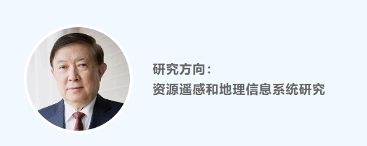
2020年7月14日，在浦江创新论坛打造的系列访谈节目《平行未来的N次元》上，徐冠华院士表示：“未来中国推进科技创新，要抓住四个关键点：一是要大力培养一批高水平青年人才。二是要大力支持中小科技企业创新。三是要持续加大基础研究支持力度。进一步深化科技体制改革，充分调动科技人员的积极性和创造性，依托重大科技基础设施、产业创新中心、创新实验室集群和科创型龙头企业，布局和启动脑科学、人工智能、基因编辑、干细胞与再生医学、纳米科学与变革性材料、核心数学与未来计算、生命过程调控与设计等一批基础前沿项目，加强基础型、应用型产业共性技术研发。四是要积极参与国际科技合作。”
闻玉梅(中国工程院院士)
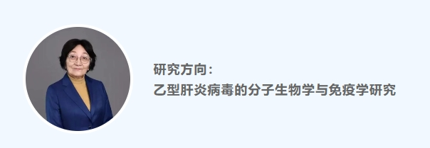
2020年6月10日，闻玉梅院士在《科技导报》撒花姑娘发表的《医学科学——永恒的人文内涵》一文中表示：“现代医学的发展有两个显著的特点：一是融入了大量的新技术，包括对人的全基因测序、发展多种疫苗、寻找疾病的靶点，针对靶点的药物开发、新型影像及超声。技术的发展与应用、机器人手术、人工器官(人工关节、人工瓣膜、人工体外循环等)以及免疫治疗和干细胞治疗。
这些新技术对疾病提供了很多新的治疗方法，显著增长了人类寿命，从而也促进了医学市场的发展。二是随着经济的发展，经济对医学的发展也具有了更广、更深的影响。改革开放后，中国多次改革医疗卫生事业，并做了一系列探索。”
施一公(中国科学院院士)
2020年6月9日，在第22届浙洽会开幕式上，施一公院士表示：“伴随着脑科学和结构生物学的进展，人们正在以原子水平感知生命机理，试图理解人在本质上怎样观察世界。随着干细胞技术的成熟和其他生物技术的开发，更多以往的不治之症变得可治可控。”
陈润生(中国科学院院士)
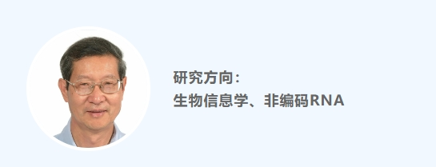
2020年6月2日，陈润生院士做客健康卫视《院士时间》中提到：“干细胞最重要的东西，就是用细胞移植代替器官移植，这是革命性的。干细胞是一种未分化的细胞，它具有非常好的分化潜力，也具有很好的修补破坏的细胞的功能。总的来讲，干细胞会给人类、特别是给医学带来革命性的变化。”
李兰娟(中国工程院院士)
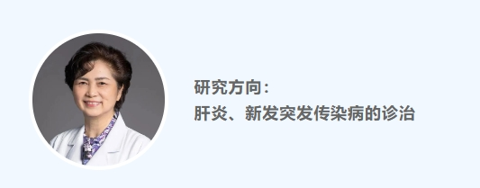
2020年2月3日，央视1套《战役情特别报道·武汉直播新闻间》对国家卫健委高级别组专家组成员李兰娟院士进行了专访。在采访中，李兰娟院士表示干细胞疗法在浙江应用后非常有效，在H7N9也用过，发现有很好的作用，所以在这次对新冠肺炎危重症患者的抢救，也将配合应用！
2022年9月24日，第十三届中国生物产业大会在武汉召开，李兰娟院士在大会上进行了线上演讲，她表示：“用人工肝、干细胞、微生态等新技术救治重症患者，可大大降低病死率。”
夏照帆(中国工程院院士)
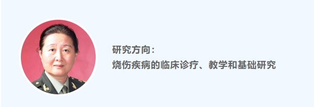
2019年12月18日，在广州市红十字会医院建院115周年上，夏照帆院士接受记者专访时表示：“干细胞的治疗作用目前也在观察中，两大派观点，一派认为干细胞可以游移、聚集到损伤的局部，直接转化成所需要的、特有的细胞来参加修复;第二种是干细胞可以分泌出一些蛋白质、重要的一些细胞器，像线粒体，把它贡献出来，来帮助局部损伤的细胞进行修复。
从动物实验观察来看，这两种都是存在的，干细胞有可能减少局部的瘢痕形成，至少能让皮肤愈合以后不会因为瘢痕造成的挛缩而引起的畸形或者是毁容。”
顾晓松(中国工程院院士)
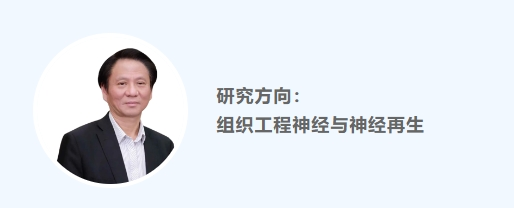
2019年11月30日，在2019健康中国与健康产业发展学术会上，顾晓松院士在接受交汇点记者专访时表示：“以脊髓损伤为例，组织工程技术通过生物材料、干细胞和小分子药物使受损伤的脊髓能够再生，让病人逐步恢复运动知觉。”面对肝脏供体来源极少的情况，顾晓松院士表示，“目前正在研究利用克隆干细胞做成类似于仿人体的肝脏组织，实现人工肝脏功能正常运转，改善重病病人生活。”
季维智(中国科学院院士)
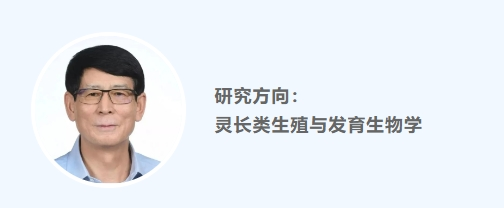
2019年11月3日，在成都高新区开幕的首届生物技术创新大会上，季维智院士指出：“干细胞给人类健康带来了很大的希望，各地都应该积极抢滩布局。理想中的干细胞能分化成我们所需的细胞、组织或器官，有望用于修复肝、肾、心等器官和组织。”
周琪(中国科学院院士)
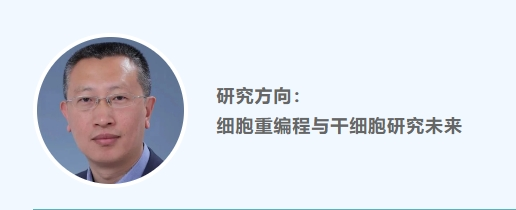
2019年9月6日，周琪院士在央视《人物》节目上中表示：“干细胞的价值在于它的科学本质，干细胞它可以不断地复制自己，它会不断地增殖，它也可以向各种组织器官分化，所以它这种特性决定它这种潜质，是替代、修复那些缺损的器官，甚至是延缓我们的衰老，增强我们的健康。”
曹雪涛(中国工程院院士)
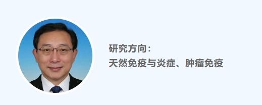
2019年6月19日，在政协第十三届全国委员会常务委员会第七次会议闭幕会上，曹雪涛院士讲解了基因编辑、干细胞与组织再生、生命组学、单细胞测序技术、合成生物学、免疫治疗等新兴生命科学前沿领域，并表示，这些生物医药高新技术的重大突破，提高了人类认识和解析生命的能力，推动了生物医学研究向精准、定量和可视化方向发展。
陈香美(中国工程院院士)
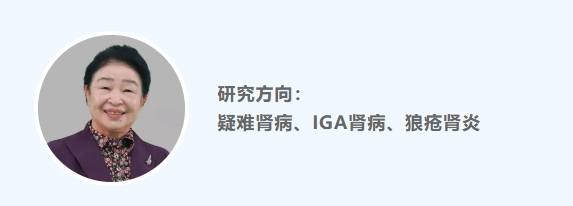
2018年12月1日，在2018年上海市罕见病/孤儿药学术年会上，陈香美院士表示：“未来最有效的干细胞治疗可能是在罕见病上。”
俞梦孙(中国工程院院士)
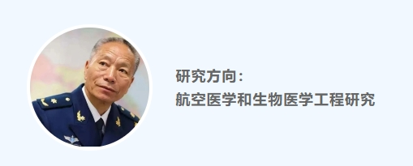
2018年10月27日，在2018深圳国际生物医学院士论坛上，俞梦孙院士表示：“人类未来的健康主题应该是加强自身稳定态，从health转变为performence的过程，而干细胞疗法的出现加速了这一过程。”
乔杰(中国工程院院士)
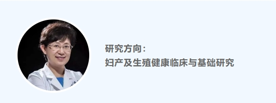
2018年8月10日，东南卫视“中国正在说”节目中，乔杰院士“我们有一例早老症的患者，这个孩子是在三四岁的时候出现了衰老的征象，逐渐失去了听力，视力也看不清楚，她过一天相当于我们过了10天，10岁时她就已经像一个七八十岁的老人。然后我们利用弟弟的胎盘间充质干细胞为这个姐姐进行了早老症的治疗，现在这个姐姐还比较健康地存活着。她应该是这类疾病在世界上存活比较长的人之一。”
袁国勇(中国工程院院士)
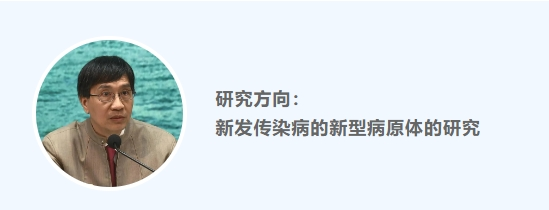
2018年6月12日，袁国勇院士在接受香港《大公报》记者专访时表示：“我们的研究人员从四名肺癌病人，抽出少量健康肺组织内的成体干细胞，培养出三维、可自我生长的呼吸道类器官，存活时间长达一年多，研究人员再将三维类器官转为在半透膜上生长的二维类器官，并于二维类器官上皮细胞的顶端进行病毒感染。
现有的流感病毒检测方法，包括过往用肿瘤细胞进行测试，但肿瘤细胞不能代表人类的肺部;人呼吸道上皮细胞、人正常肺组织则不能培养或存活时间很短，难以保持检测准绳度;至于传统的小鼠实验，并不能代表人，猴子实验亦成本过高。成体干细胞培养的类器官可避免上述情况，研究结果已申请美国专利。”
钟南山(中国工程院院士)
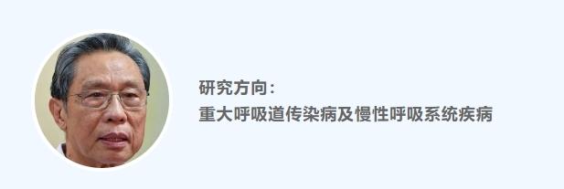
2018年3月，在记者问到下一个五年规划时，钟南山院士回答道：“一个是用新技术解决慢阻肺、哮喘的小气道问题，对早诊早治有较大帮助，第二个是要发展一个抗肿瘤的新药。还有一个是希望在干细胞方面做一些工作，现在也正在组织。”
2021年4月，厦门细胞（生物）治疗临床研究研讨会上，钟南山到场致辞并作了题为《细胞治疗的展望》的学术报告，指出国务院《“十三五”国家战略性新兴产业发展规划》中，将干细胞与再生医学、肿瘤免疫细胞治疗、CAR-T细胞治疗等新型诊疗服务列为发展的重点任务。
白春礼(中国科学院院士)
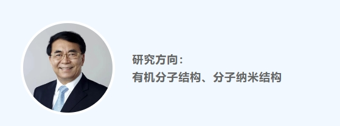
刘以训(中国工程院院士)
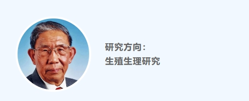
2017年11月22日，刘以训院士在接受《长沙晚报》记者采访时表示：“男性不育中非梗阻性无精子症患者体内没有精子，无法拥有自己亲生的孩子。不过，这个难题已经看到了破解的曙光：取患者的睾丸组织进行精原干细胞的体外增殖和分化，获得精子后，通过卵胞浆单精子注射技术，把精子显微注射到卵子内，形成胚胎，最后移植到母体内进行妊娠，直至生作站已经在小鼠身上取得了完全成功，在人身上也已经分化出了精子，也就是说，在不久的将来，无精症患者生育自己的孩子有望成为现实。”
此外，刘以训院士还透露了一个好消息：“针对女性不孕，我们研究人员从患者月经血中分离到间充质干细胞，经过体外的培养扩增后，回输到患者子宫，分化成子宫内膜细胞，增加子宫内膜厚度，使其适于进行胚胎移植。目前，该研究已在部分患者身上获得成功。”
戴尅戎(中国工程院院士)
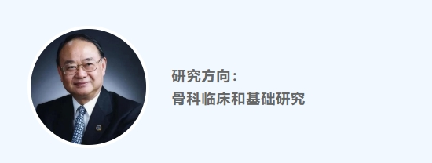
2017年11月8日，在生物与生命科学技术与产业分会上，戴尅戎院士表示：“以组织工程为基础的再生医学一直是医学研究的前沿和热点。传统组织工程有三个要素：支架、细胞(附着干支架上扩增，主要为多能干细胞)与生长因子，以此‘再生’出新的肌肉、神经、骨等人类所需的组织，甚至器官。”
赵继宗(中国科学院院士)
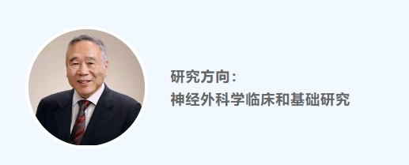
2017年10月26日，在第609次香山科学会议学术讨论会上，赵继宗院士表示：“在通过生物材料、生长因子与干细胞重建有利于神经再生的微环境，成为修复脊髓损伤的重要策略。”
付小兵(中国工程院院士)
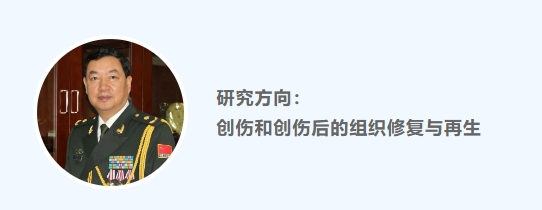
2017年3月30日，《中国科学报》发表付小兵院士文章，他表示:“干细胞的诱导分化功能，可以在病患身上实现汗腺再生。这一技术的成功使用，可望建立一种利用干细胞再生汗腺的重大新技术，帮助烧伤病人逃离每天不得不吹空调、泡水缸的命运。”
裴钢(中国科学院院士)
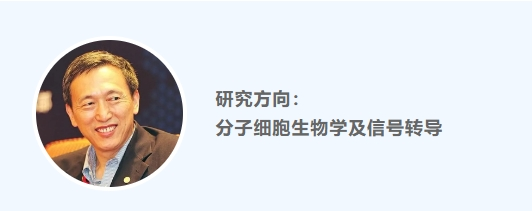
2016年7月17日，在“SELF格致论道”讲坛上，裴钢院士表示:“干细胞是一个比较理想的材料，因为干细胞具有全能型，可能在某种条件下它会从一个全能的细胞变成肝细胞、肾细胞、肺细胞、心脏细胞……这在另外一种有生物材料，或是一些必要条件下，它可能就形成了一个器官，一旦一个功能器官形成后，那它向我们器官的供应就会不成问题，很多人的健康就会得到更好的保证。”
2022年11月18日，在中国干细胞产业联盟成立大会上，裴钢院士表示:“我们要把干细胞真正变成老百姓非常喜欢的产品，它不仅能够治疗各种疾病，还能够治未病、治衰老。”